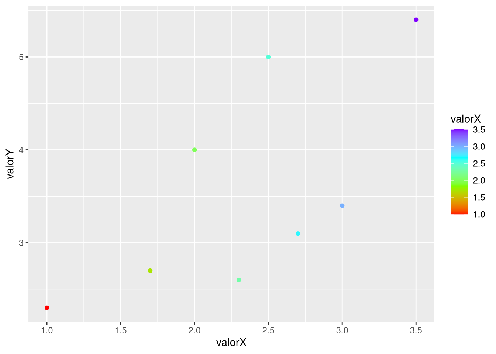

Capítulo 8 Análise Textual (text mining)
CAPÍTULO AINDA EM CONSTRUÇÃO
Conteúdo planejado:
- Introdução à análise textual via computador
- Tipos de abordagens: bag of words, semantic parsing.
- Frequência de termos (bag of words, n-grams, skipgrams, TF-IDF)
- nuvem de palavras (wordclouds), Polarized tag cloud, pyramid plot.
- Correlação de palavras, tipos de distâncias, dendogramas
- parts-of-speech
- keyword extraction
- redes de palavras (word networks)
- Inteligência Artificial: clusterização; topic modelling
- Análise de sentimentos.
A análise computacional de textos é praticamente um sinônimo de Mineração de texto (text mining)
Há diversas funções nativas do R que usamos na mineração de texto/análise textual, mas também há diversos pacotes focados em análise textual com diversas ferramentas, como o
tidytext,
quanteda (QUantitative ANalysis TExtual DAta),
tm (Text Mining Package) e
qdap (Quantitative Discourse Analysis Package).
Estes são alguns dos mais famosos, com diversas ferramentas, mas há alguns outros pacotes focados em funções mais específicas, como o pacote wordcloud,
ggwordcloud (nuvem de palavras para o ggplot2, com mais craopções)
por exemplo.
Há redundância entre estes pacotes, isto é, eles tem funções prórias que fazem a mesma coisa que funções de outros pacotes.
O pacote quanteda acompanha outros, como o quanteda.textstats, quanteda.textplots e o quanteda.textmodels que aconselhamos instalar também.
Um software bem conhecido e que possui interface gráfica é o iramuteq (Interface de R pour les Analyses Multidimensionnelles de Textes et de Questionnaires), criado em 2009 por Pierre Ratinaud. Apesar de ainda ser bastante utilizado, o Iramuteq tem diversas limitações.
8.1 Abordagens: saco de palavras (bag of words) e análise semântica (semantic parsing)
Na análise textual podemos analisar levando ou não em consideração a ordem das palavras ou sua função gramatical. Se o ordenamento ou a função das palavras não é importante, e queremos saber, por exemplo, a frequência de certos termos, então faremos uma abordagem “saco de palavras”.
8.2 Do texto ao Corpus
A primeira coisa a se fazer é colocar como opção global de nosso projeto que strings não sejam consideradas como fatores.
# Opções globais
options(stringsAsFactors = FALSE)
library(dplyr)
library(magrittr)Vamos importar os dados. Eu peguei as notas taquigráficas da 10ª sessão da CI da Pandemia, de 19/05/2021 e a estruturei em csv e Rdata. O modo mais fácil é importar o Rdata
NotasTaq <- readRDS(url("https://raw.githubusercontent.com/SoaresAlisson/NotasTaquigraficas/master/NotasTaquigraficas_2021-05-19_CPI.Pandemia.Rdata"))
# vamos transformar nosso dataframe em tibble
NotasTaq = as_tibble(NotasTaq)
# conferindo se é tibble
class(NotasTaq)
## [1] "tbl_df" "tbl" "data.frame"
# Se quisermos dar uma olhada na tabela completa
View(NotasTaq)Se tudo deu certo, então o tibble apareceu na sessão Environmet do seu RStudio.

Tibble “NotasTaq” foi carregado no R
Vamos então separar somente as falas.
Falas = NotasTaq$FalasSe quisermos separar por falas de uma pessoa específica, vamos ver quais os valores da coluna “Nomes”
NotasTaq$Nomes %>% unique
## [1] "PRESIDENTE" "EDUARDO PAZUELLO"
## [3] "RENAN CALHEIROS" "GEN. EDUARDO PAZUELLO"
## [5] "FLÁVIO BOLSONARO" "OTTO ALENCAR"
## [7] "FERNANDO BEZERRA COELHO" "ROGÉRIO CARVALHO"
## [9] "CIRO NOGUEIRA" "ELIZIANE GAMA"
## [11] "MARCOS ROGÉRIO" "RANDOLFE RODRIGUES"
## [13] "EDUARDO BRAGA" "HUMBERTO COSTA"
## [15] "JORGINHO MELLO" "LUIS CARLOS HEINZE"
## [17] "TASSO JEREISSATI" "ALESSANDRO VIEIRA"
## [19] "SORAYA THRONICKE"Falas.SenHeinze <- NotasTaq %>%
# filtrando as linhas por nome
filter(Nomes == "LUIS CARLOS HEINZE") %$%
# separando somente as falas
Falas
Falas.SenHeinze
## [1] "Sr. Presidente... Sr. Presidente... "
## [2] "Eu só quero fazer uma colocação. V. Exa. e o Senador Eduardo Braga são do Amazonas. "
## [3] "Foram liberados no ano passado R$2,606 bilhões. "
## [4] "... se tinha dinheiro lá. "
## [5] "Mas está aqui a... "
## [6] "Não estou mentindo, aqui está o valor. "
## [7] "Não estou mentindo, aqui está o valor liberado. "
## [8] "Esse é... Não senhor, aqui não pode mentir. "
## [9] "Aqui está o valor liberado para o Governo do Estado. "
## [10] "Não senhor. Não senhor. Vou lhe mostrar o valor. "
## [11] "Vou mandar imprimir e vou lhe mostrar. Não me chame de mentiroso! Não sou! Não sou! Vou lhe mostrar agora. "
## [12] "Vou puxar a tabela e vou ver quanto foi para lá. Foi o dinheiro lá. Não é irresponsabilidade do Governo Federal, é do Governo lá do Amazonas... "
## [13] "Vamos mudar o nome então, Presidente. Vamos mudar o nome: é raspa de tacho que os Prefeitos vêm pedir para os Deputados e Senadores. "
## [14] "\"Não sobrou uma raspinha de tacho aí?\" "
## [15] "Então tira o \"pixuleco\" fora e fica uma raspinha de tacho que fica melhor. "
## [16] "Sr. Presidente, existiam três... "
## [17] "É só um minutinho. "
## [18] "O.k. "
## [19] "Sr. Presidente... "
## [20] "Deixa eu só... "
## [21] "Está bom. "
## [22] "Senador Renan, deixar eu só lhe colocar. Tem notas técnicas, nº 5, nº 6, nº 9, nº 11, nº 17, desde o Ministro Mandetta, permitindo o uso da cloroquina. Essas notas técnicas existem. "
## [23] "Não, vou lhe dizer. Eu vou lhe dizer. "
## [24] "E o Ministro Pazuello explicou que, depois da pesquisa criminosa – que nós vamos discutir aqui dentro – feita lá em Manaus, que matou 22 pessoas, eles trocaram, porque usavam em qualquer fase; era para só usar nos primeiros quatro, cinco, seis dias, e não em estágio em que estavam as pessoas já hospitalizadas e intubadas. "
## [25] "Fora a dose; a dose lá foi mortal. "
## [26] "A questão de ordem é só para esclarecer isso que eu estou esclarecendo. "
## [27] "Todo mundo fala aqui; por que eu não posso falar? Qualquer um chega e atropela o outro. "
## [28] "Eu tenho direito a falar. Qualquer um chega e fala a hora que quer; eu também tenho direito e estou esclarecendo, porque eu sei do assunto. "8.2.1 Abordagem Bag of words
Na abordagem de “saco de palavras” a ordem dos termos não importa.
8.3 Remoção de palavra vazia (stopwords)
Ao analisarmos texto, o mais frequente são palavras bem pouco informativas, como artigos “o”, “a” “os”, “as”. Para termos uma noção melhor removemos as chamadas stopwords.
E se já houvesse uma lista pronta? Existe. São as chamadas stopwords. É possível encontrar listas prontas na internet, mas diversas funções no R já incluem em si tais listas.
Para ver a lista padrão no R, use:
library(tm)
stopwords("en")
## [1] "i" "me" "my" "myself" "we"
## [6] "our" "ours" "ourselves" "you" "your"
## [11] "yours" "yourself" "yourselves" "he" "him"
## [16] "his" "himself" "she" "her" "hers"
## [21] "herself" "it" "its" "itself" "they"
## [26] "them" "their" "theirs" "themselves" "what"
## [31] "which" "who" "whom" "this" "that"
## [36] "these" "those" "am" "is" "are"
## [41] "was" "were" "be" "been" "being"
## [46] "have" "has" "had" "having" "do"
## [51] "does" "did" "doing" "would" "should"
## [56] "could" "ought" "i'm" "you're" "he's"
## [61] "she's" "it's" "we're" "they're" "i've"
## [66] "you've" "we've" "they've" "i'd" "you'd"
## [71] "he'd" "she'd" "we'd" "they'd" "i'll"
## [76] "you'll" "he'll" "she'll" "we'll" "they'll"
## [81] "isn't" "aren't" "wasn't" "weren't" "hasn't"
## [86] "haven't" "hadn't" "doesn't" "don't" "didn't"
## [91] "won't" "wouldn't" "shan't" "shouldn't" "can't"
## [96] "cannot" "couldn't" "mustn't" "let's" "that's"
## [101] "who's" "what's" "here's" "there's" "when's"
## [106] "where's" "why's" "how's" "a" "an"
## [111] "the" "and" "but" "if" "or"
## [116] "because" "as" "until" "while" "of"
## [121] "at" "by" "for" "with" "about"
## [126] "against" "between" "into" "through" "during"
## [131] "before" "after" "above" "below" "to"
## [136] "from" "up" "down" "in" "out"
## [141] "on" "off" "over" "under" "again"
## [146] "further" "then" "once" "here" "there"
## [151] "when" "where" "why" "how" "all"
## [156] "any" "both" "each" "few" "more"
## [161] "most" "other" "some" "such" "no"
## [166] "nor" "not" "only" "own" "same"
## [171] "so" "than" "too" "very"
stopwords("pt")
## [1] "de" "a" "o" "que" "e"
## [6] "do" "da" "em" "um" "para"
## [11] "com" "não" "uma" "os" "no"
## [16] "se" "na" "por" "mais" "as"
## [21] "dos" "como" "mas" "ao" "ele"
## [26] "das" "à" "seu" "sua" "ou"
## [31] "quando" "muito" "nos" "já" "eu"
## [36] "também" "só" "pelo" "pela" "até"
## [41] "isso" "ela" "entre" "depois" "sem"
## [46] "mesmo" "aos" "seus" "quem" "nas"
## [51] "me" "esse" "eles" "você" "essa"
## [56] "num" "nem" "suas" "meu" "às"
## [61] "minha" "numa" "pelos" "elas" "qual"
## [66] "nós" "lhe" "deles" "essas" "esses"
## [71] "pelas" "este" "dele" "tu" "te"
## [76] "vocês" "vos" "lhes" "meus" "minhas"
## [81] "teu" "tua" "teus" "tuas" "nosso"
## [86] "nossa" "nossos" "nossas" "dela" "delas"
## [91] "esta" "estes" "estas" "aquele" "aquela"
## [96] "aqueles" "aquelas" "isto" "aquilo" "estou"
## [101] "está" "estamos" "estão" "estive" "esteve"
## [106] "estivemos" "estiveram" "estava" "estávamos" "estavam"
## [111] "estivera" "estivéramos" "esteja" "estejamos" "estejam"
## [116] "estivesse" "estivéssemos" "estivessem" "estiver" "estivermos"
## [121] "estiverem" "hei" "há" "havemos" "hão"
## [126] "houve" "houvemos" "houveram" "houvera" "houvéramos"
## [131] "haja" "hajamos" "hajam" "houvesse" "houvéssemos"
## [136] "houvessem" "houver" "houvermos" "houverem" "houverei"
## [141] "houverá" "houveremos" "houverão" "houveria" "houveríamos"
## [146] "houveriam" "sou" "somos" "são" "era"
## [151] "éramos" "eram" "fui" "foi" "fomos"
## [156] "foram" "fora" "fôramos" "seja" "sejamos"
## [161] "sejam" "fosse" "fôssemos" "fossem" "for"
## [166] "formos" "forem" "serei" "será" "seremos"
## [171] "serão" "seria" "seríamos" "seriam" "tenho"
## [176] "tem" "temos" "tém" "tinha" "tínhamos"
## [181] "tinham" "tive" "teve" "tivemos" "tiveram"
## [186] "tivera" "tivéramos" "tenha" "tenhamos" "tenham"
## [191] "tivesse" "tivéssemos" "tivessem" "tiver" "tivermos"
## [196] "tiverem" "terei" "terá" "teremos" "terão"
## [201] "teria" "teríamos" "teriam"Para aplicar esta função no nosso texto, usamos
removeWords(texto, stopwords("pt"))
Para adicionar novas palavras, cria-se um novo vetor - chamamos aqui de “novas_stopwords” - com as novas palavras a serem retiradas, e em seguida o stopwords
novas_stopwords <- c("então", "portanto", stopwords("pt")) # criando novo vetor com mais palavras
# removeWords(texto, novas_stopwords) # removendo as stopwords8.4 stemização (Stemming) e lematização
EM CONSTRUÇÃO
8.4.1 Palavras em contexto (keyword-in-context)
CAPÍTULO AINDA EM CONSTRUÇÃO
Podemos ver como certas palavras são usadas em diversas frases no texto para ter uma ideia melhor do contexto em que aparecem.
No quanteda, usamos a função kwic(Dados, pattern = "padrão").
8.5 Ngrams
EM CONSTRUÇÃO
8.5.1 GoogleNgrams
A Google pegou sua enorme base de dados dos milhares de livros do Google Books e extraiu os termos mais frequentes, e os colocou disponível para consulta no site Goolge Books Ngram Viewer. O Google Ngrams facilitou a busca por ngrams nesta base de dados, naquilo que chamavam de “culturonomics”. O nome não pegou, a ferramenta tem suas limitações, mas ainda assim pode ser bem útil. A base de dados possui 5.2 milhões de livros, cerca de 4% de todos os livros já publicados. Para mais informações sobre a base de dados e sobre o GoogleNgram no site. Tanto o Python (com o get-ngrams) como o R (ngramr) possuem pacotes que usam os dados do Google Ngram.
Instalando o pacote
install.packages('ngramr')Carregando os pacote
library(ngramr)E um exemplo de uso
library(ggplot2)
ng <- ngram(c("Max Weber", "Émile Durkheim"), year_start = 1890)
ggplot(ng, aes(x=Year, y=Frequency, colour=Phrase)) +
geom_line()
Um exemplo da página do ngramr no Github com mais opções, usando a função ggram() no ngramr, que pega dados do GoogleNgram e plota os dados com o ggplot2:
ggram(c("monarchy", "democracy"), year_start = 1500, year_end = 2000,
corpus = "eng_gb_2012", ignore_case = TRUE,
geom = "area", geom_options = list(position = "stack")) +
labs(y = NULL)
É possível mudar entre diferentes corpus, que neste caso representam as diferentes línguas, como “eng_us_2019”, “eng_gb_2019”, “chi_sim_2019”, “fre_2019”, “ger_2019”, “heb_2019”, “ger_2012”, “spa_2012”, “rus_2012”, “ita_2012”. Para ver todos os corpus disponíveis veja no site busque a sessão “Corpora”. Infelizmente, não há corpus em português no Google Ngram.
classicos = c("Max Weber", "Émile Durkheim", "Karl Marx", "Gabriel Tarde", "Georg Simmel")
ggram(classicos, year_start = 1980, year_end = 2000,
# Para mudar lingua, mude o corpus
# ignore case: se diferencia maiúsculo de minúsculo
corpus = "fre_2019", ignore_case = TRUE,
# tipo de grafico em geom
geom = "line", geom_options = list()) +
# labs: label do eixo y
labs(y = NULL) 
Dicas Ngramr:
- Site do Books Ngram Viewer explicando seus parâmetros.
- PDF com a documentação do ngramr
- Instalação/Primeiros passos com o Ngramr na página do Github do ngramr
- Um projeto similar ao Google Ngram - inclusive usando parte do mesmo pessoal - é o bookworm:HalthiTrust do projeto Halthi Trust-Digital Livrary, com muito mais línguas, inclusive o português e mais opções de busca.
8.5.2 TF-IDF
EM CONSTRUÇÃO
Dicas Analise Textual
- Julia Silge Learn tidytext with my new learnr course. Um curso interativo do pacote Tidytext.
Textos sobre análise textual
- CASTELFRANCHI, Yurij. A análise de textos auxiliada pelo computador: um laboratório a céu aberto para as ciências sociais. Journal of Science Communication 16(02)(2017)C04
- GRIMMER, Justin.STEWART, Brandom. Text as Data: The Promise and Pitfalls of Automatic ContentAnalysis Methods for Political Texts. Political Analysis(2013) pp. 1–31. doi:10.1093/pan/mps028.
- TREADWELL, Donald. Content Analysis: Understanding Text and Image in Numbers. Understanding Text and Image in Numbers. In __ Introducing Communication Research: paths of Inquiry. Sage. 2014. (Capítulo sobre análise de conteúdo)
- Link para diversos artigos de Gary King sobre Automated Text Analysis.
Vídeos
- BROWN, Taylor W. Workshop on automated text analysis no Summer Institute in Computational Social Science na Universidade de Oxford em 2019. Em inglês, sem legendas, usando o pacote Quanteda. Parte 1 e Parte 2. O material da aula no Google Drive.